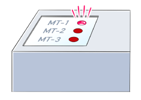

Inverters-FREQROL Product Features Equipment maintenance

Maintenance timer
The Maintenance timer (Y95) signal is output when the inverter's cumulative energization
time reaches the time period set with the parameter.
A warning is displayed on the operation panel.
This can be used as a guide for when the maintenance of the equipment should be conducted.
〈Applicable models〉
・A800 / F800：Three sets of maintenance timer/warning output settings
・E700 / D700：One set of maintenance timer/warning output settings
